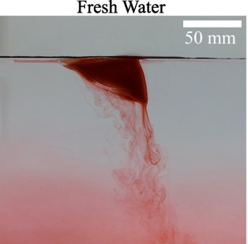

My Current Research
I am investigating the impact mitigation and energy absorption performance of a new class of granular metamaterials 3D-printed in our lab. I am also involved in studying the dynamics of active filaments in granular beds.
Here are the major research projects I have worked on during my PhD:
1. Crumpling: Memory in Thin Sheets
Published in PRR: Memory in cyclically crumpled sheets
In this project, I study how thin flexible sheets respond when repeatedly twisted...
.png)

Figure 2: Twisting under progress

Figure 3: After twist

Figure 4: 3D reconstruction of a crumpled sheet obtained using a custom-built laser profilometer
At first, the deformations are highly random, but after many cycles, the sheet begins to form repeatable patterns...
2. Bundling Architecture of Elastic Filaments Under Twist
Published in PRE: Bundling architecture in elastic filaments with applied twist
When multiple filaments are twisted together, they form complex bundled structures whose architecture depends on the interplay between elasticity, geometry, and applied twist. In this study, we experimentally and theoretically investigate how initially parallel elastic filaments spontaneously rearrange into ordered bundles under axial twisting and eventually become disordered. The filaments exhibit radial migration, resulting in an emergent internal structure that balances stretching, bending, twisting, and contact energy. Our results provide new insights into the mechanics of natural and engineered fiber assemblies, with implications for materials design, biology, and soft matter physics.

3. Self-Propulsion of Floating Ice Block on Water Surface
Read the article in arXiv: Self-Propulsion of Floating Ice Blocks
